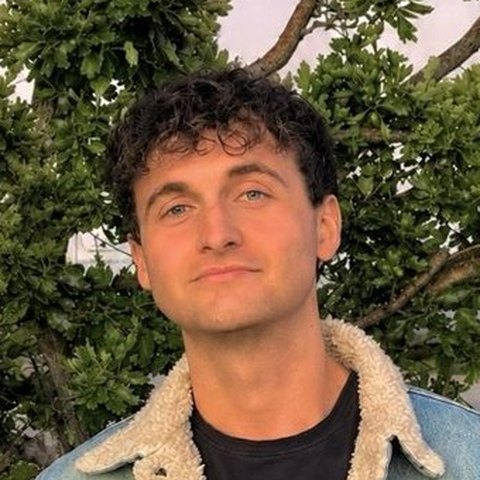

Sesiones individuales por videollamada para trabajar sobre un objetivo concreto. La primera charla no tiene costo.
Tocá los botones para ver la idea en la que se basa.
Cuando la forma de ver una situación no cambia, lo que hacemos y lo que obtenemos tampoco.
Respondé dos preguntas y te muestro qué tipo de sesión te conviene.
¿Aceptás comprometerte 100% con tu proceso?
Ningún trabajo que hagamos va a surtir efecto sin tu verdadero compromiso y apertura.
Quizás no sea el momento
El protagonista del proceso de coaching sos vos, y el compromiso es el pilar fundamental para generar un cambio real. Si más adelante sentís que es el momento, acá voy a estar.
¿Qué frase te representa más?
Vos vas a decidir qué tema trabajar, cómo y cuándo hacerlo, en función de tus propias necesidades e inquietudes.
Sesiones flecha
Trabajamos de forma concreta y directa sobre tu objetivo para que puedas transformarlo en una meta clara y medible, teniendo en cuenta tu situación actual, generando posibilidades y estableciendo un plan de acción para alcanzarla.
No son sesiones que busquen indagar en lo emocional ni profundizar en tus creencias limitantes. Si te interesa eso, .
Sesiones pluma
Espacio de autoexploración para profundizar en aquello que te impide concretar tus objetivos. Se trabaja con preguntas para que puedas observar creencias, juicios y emociones que en este momento te impiden avanzar. Trabajamos con el cambio de mirada y la realización de acciones.
Si buscás una forma más concreta y directa de trabajar tus objetivos, .
Un proceso de coaching cuenta de varias sesiones en las que vamos trabajando de forma profunda en el objetivo. No es posible resolver todo en una única sesión.
El primer paso es una charla para conversar sobre lo que implica un proceso de coaching y para que me cuentes qué te gustaría trabajar. Es el momento de despejar todas tus dudas y acordar cómo seguir.
Elegís el día y el horario que te quede cómodo. El link de Google Meet te llega por mail.
Para reservar una sesión es necesario realizar el pago con antelación. Si no podés asistir y avisás con al menos un día de anticipación, se reembolsa el importe o se reprograma la sesión. Si avisás con menos de un día, el importe no se reembolsa, pero sí se puede reprogramar.

A través de una búsqueda personal logré comprender la importancia de cultivar una mente sana y un espacio que nos ayude a conocerla, ya que a través de ella construimos la realidad en la que vivimos. Es nuestra mente la que percibe, le da nombre y forma a lo que nos rodea, y por eso es tan importante cuidarla y comprenderla.
En 2023, luego de recibirme, trabajé como mentor en la Escuela de Formación de Líderes, donde acompañé a los estudiantes de primer año de la carrera. Esto me permitió profundizar en los conceptos y enriquecer mi formación.
Mi formación académica tiene una fuerte connotación científica y, dada mi naturaleza curiosa, me interesa investigar las diferentes herramientas que existen para cultivar el bienestar.
Escribime y te respondo.